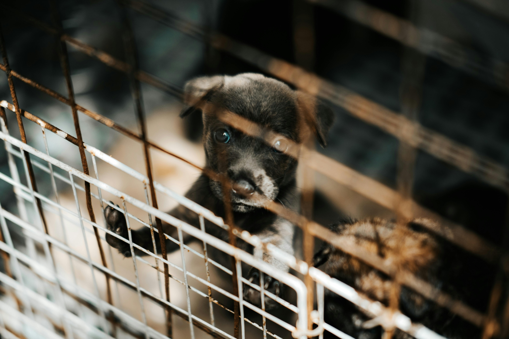
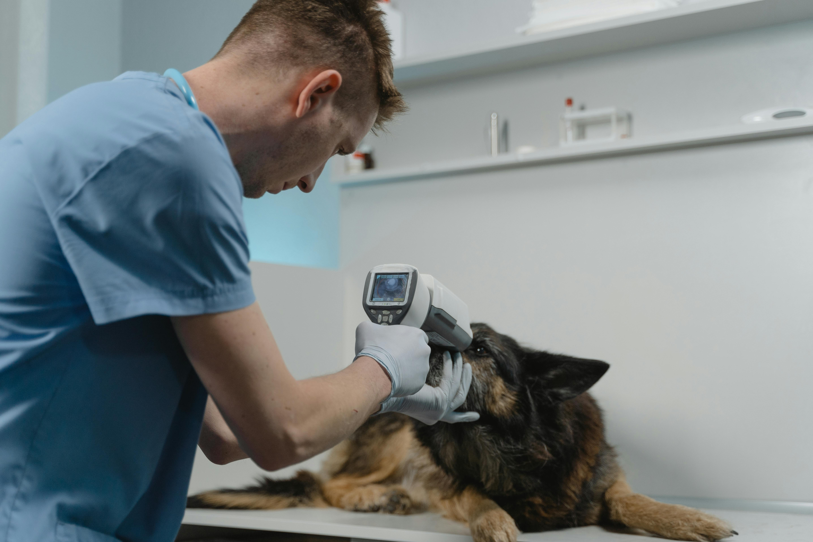
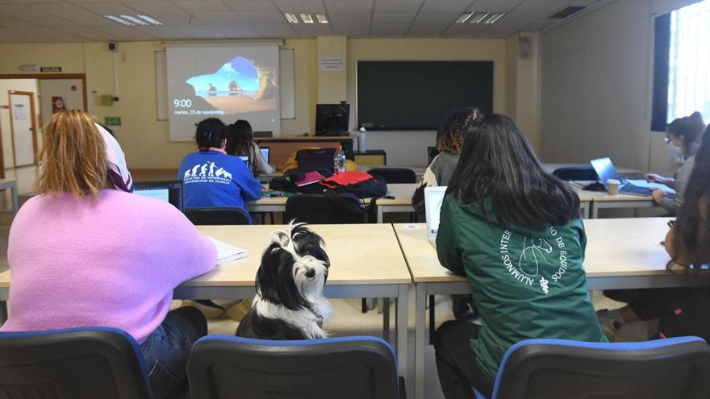
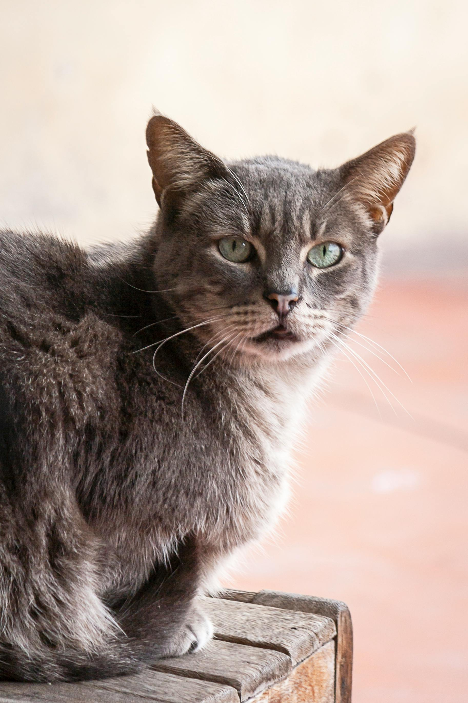
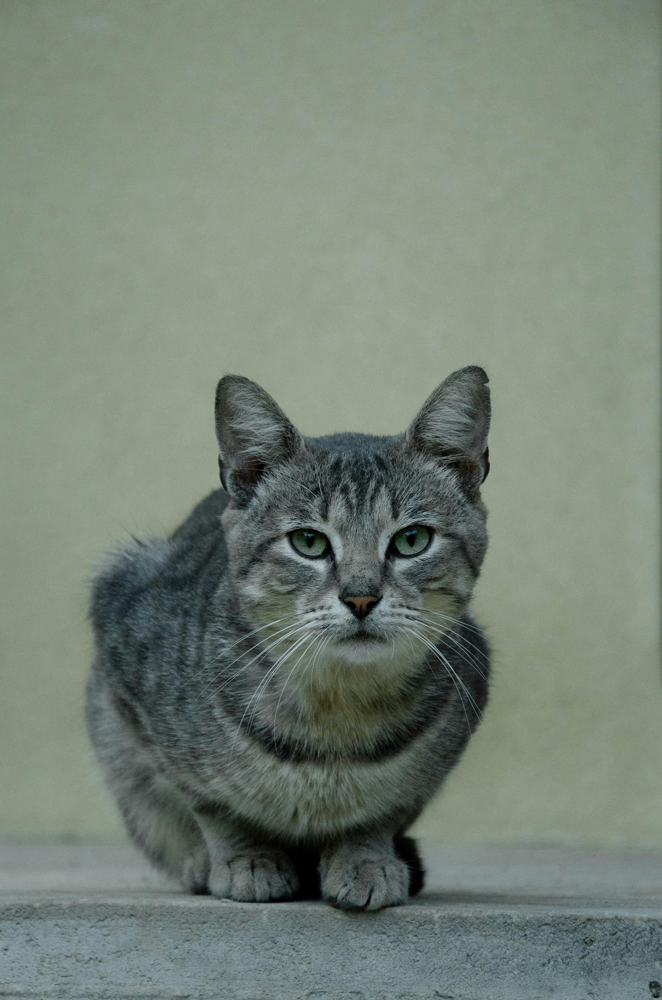
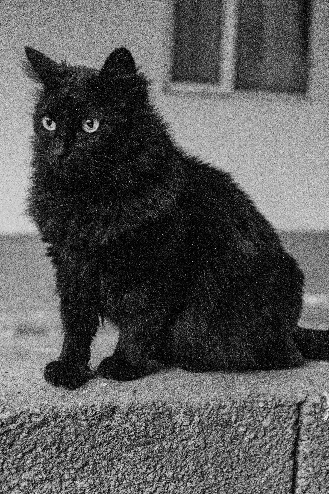
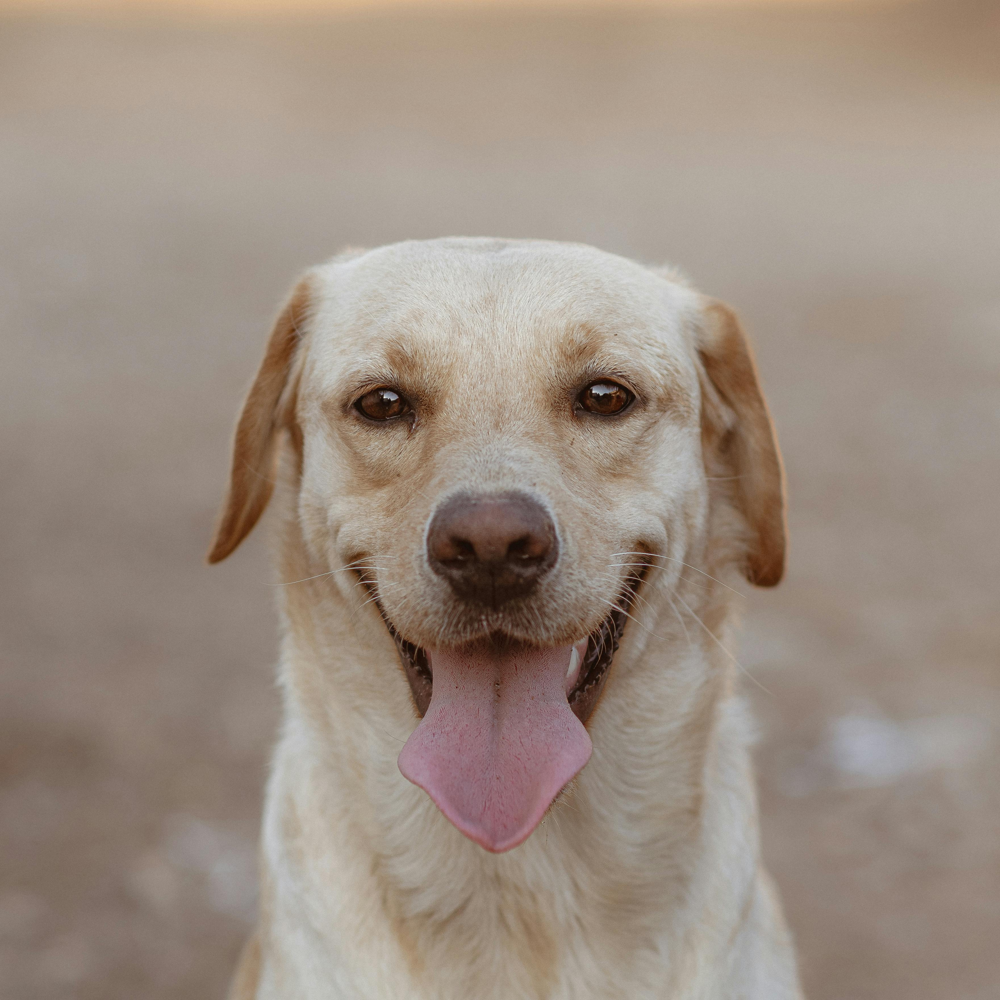
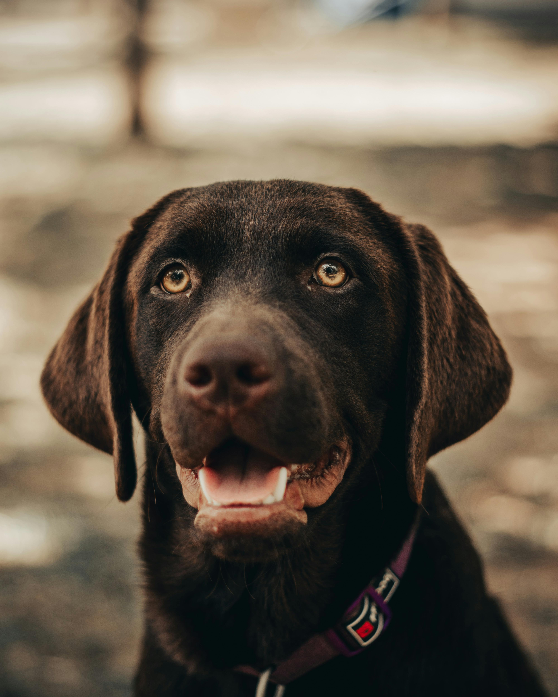
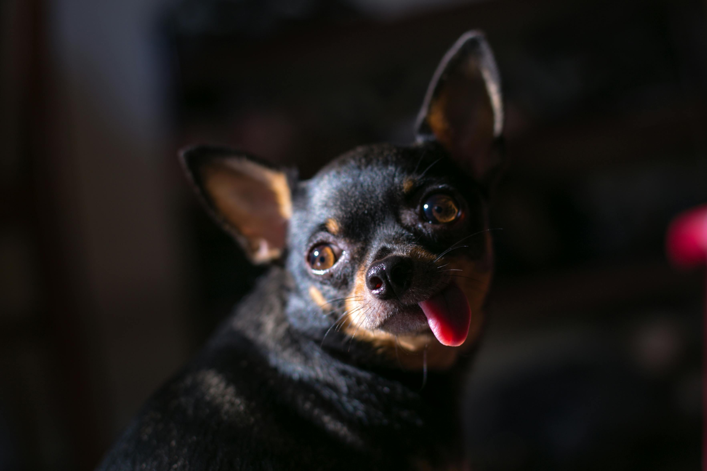

Nuestra mision
Rescatamos, cuidamos y acompañamos animales hasta encontrar hogares responsables y amorosos.

Rescatamos, cuidamos y acompañamos animales hasta encontrar hogares responsables y amorosos.

Adoptar salva vidas, fortalece la empatia y abre espacio para seguir rescatando animales en riesgo.
Acompanamiento integral

Te orientamos para que encuentres la mascota ideal segun tu estilo de vida.

Apoyamos con vacunacion, desparasitacion y seguimiento basico para cada caso.

Compartimos recomendaciones para una convivencia responsable y segura.
Mascotas listas para un hogar






Cada adopcion se convierte en una relacion de afecto y compañia.
Compartir con animales reduce el estres y aporta estabilidad.
Las mascotas ayudan a crear habitos de cuidado y movimiento diario.
Adoptar enseña compromiso y fortalece la empatia.
Contacto
Correo: info_pets23@worldpets.org
Telefono: +57 300 123 4567
Ubicacion: Bogota, Colombia